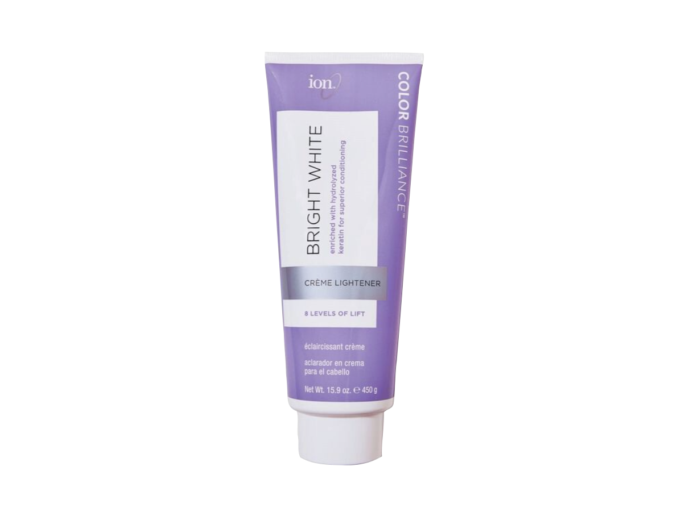
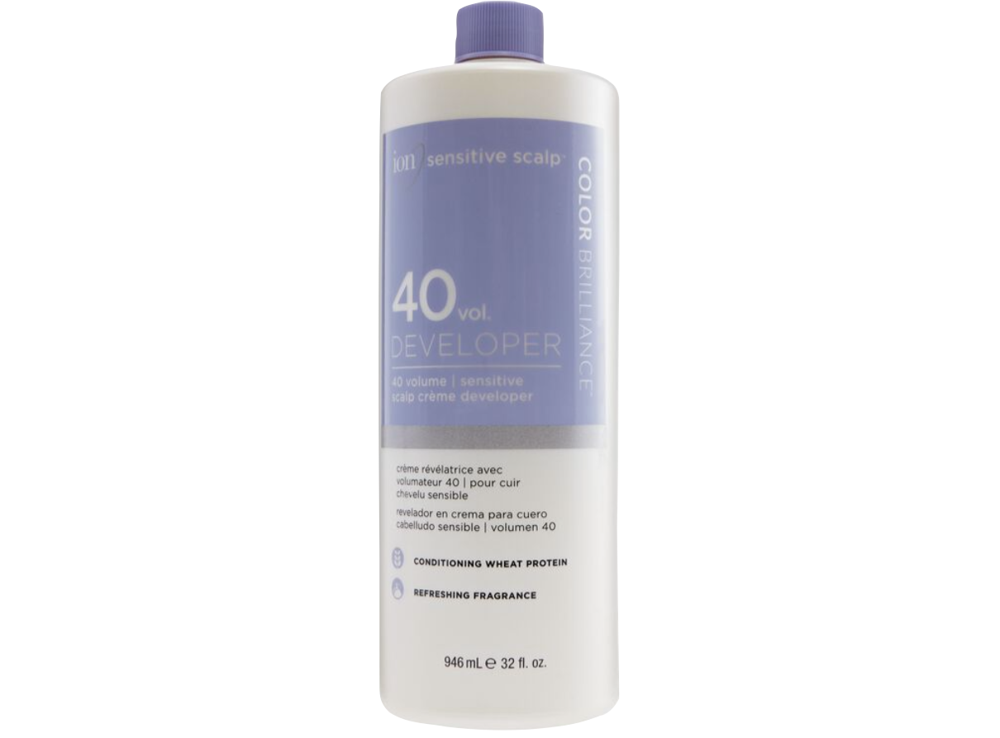

+

"Hair bleaching is a chemical process that involves stripping the pigment (colour) from hair strands, resulting in a lighter hair colour." To do this, we mix bleach with developer. The volume of developer will determine the amount of lightening the hair will do. 10 volume will lift the hair one level, 20 volume will lift the hair two levels, 30 volume will lift the hair three levels, and 40 volume will lift the hair four levels. 50 volume does exist, but 40 volume is as high as anyone unlicensed should go.
"Each individual hair shade will have different levels of pigment to dissolve through and is dependent on the condition and type of hair you have, as well as how dark the natural colour is." "The longer the bleach is left on the hair, the more pigment is dissolved, and the lighter the hair becomes. Hair with existing blonde tones will find it easier to become a platinum shade, whereas darker shades like dark brunette/black will likely appear yellow or even a warm reddish hue after the first application."
"Greasy hair is the recommended hair condition as your hair’s natural oils are well equipped to resist the bleach process, protecting the scalp from chemical damage. It's recommend bleaching hair at least 72 hours post-hair wash for ultimate protection. You can apply bleach on wet hair, however the final result is not that effective and is suitable for more subtle hair transformations. Applying bleach onto dry hair is the way to go, as this will allow the pigment from your current hair colour to be stripped properly and evenly."
"The recommended time limit for hair lightening at home will be dependent on which hair bleach brand you choose to use. As a general rule, the length of time that bleach is in your hair should not exceed 45 minutes. Any longer than this and your hair strands will look and feel fried! Make sure you follow the advice and instructions on the pack." ~ john frieda